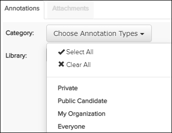
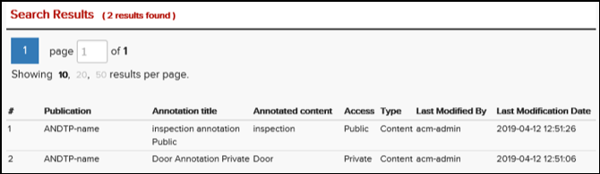

The Annotations search dialog allows searching your annotations and/or public candidates. You can reset this form by clicking the Reset button.
If your administrator has enabled the Can access current revisions only
privilege, publications that are not current do not appear in the search results.
You must update to the latest revision before these publications are available.
Refer to Library Pane for more
information.
Note: When
you perform an annotation search on a symbolic link publication, the information
displayed is for the original (target) publication.
To search for annotations, do these steps:
-
From the Category
Choose Annotation Types drop-down menu, select one of
these options:

- Click
 to search all annotation types.Note: You can clear this selection by clicking .
to search all annotation types.Note: You can clear this selection by clicking . - Select Private to return all annotations created by the user in the library or selected publication.
- Select Public Candidate to return annotations
that must be approved before they can be made public.
- When a user has write privilege for Public Annotations and selects Public Candidate, the search returns Public Candidate annotations in the selected library or publication for review.
- When a user does not have write privilege for Public Annotations and selects Public Candidate, the search returns Public Candidate annotations in the selected library or publication that were created by the logged-in user.
- Select My Organization to return all annotations for your organization only.
- Select Everyone to return all public annotations to all organizations.
- Click
-
Click the
 Search button.
The Search Results pane appears below the Annotations search pane. This example shows the search results with the My Annotations radio button selected:
Search button.
The Search Results pane appears below the Annotations search pane. This example shows the search results with the My Annotations radio button selected:
Annotations Search Results